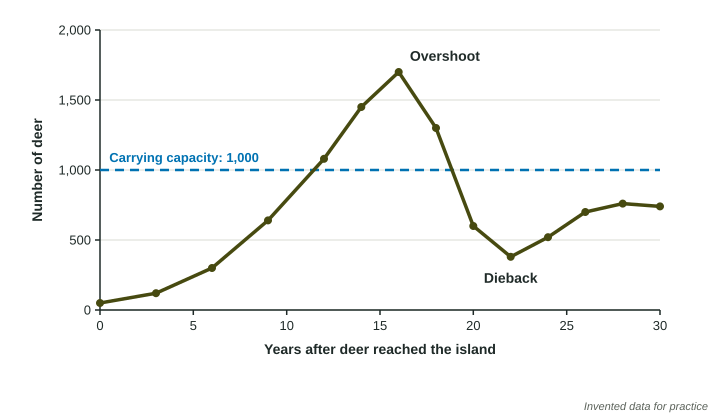

No population can grow forever. Sooner or later it runs short of food, water or space. The largest population that an environment can support over time is its carrying capacity, written K. What happens when a population passes that limit is one of the clearest stories in ecology, and one the exam tests often.
Carrying capacity
Carrying capacity depends on the resources an environment offers a species: food, water, space, shelter, nesting sites. It is not fixed. A wet year with lots of plant growth raises it; a drought lowers it. People can raise it for themselves, for example by growing more food, and can lower it for other species by destroying their habitat.
Overshoot and dieback

A population with plenty of resources grows. Because it takes time for food to run short, the population can keep growing past carrying capacity. This is overshoot: the population uses resources faster than they are replaced. Plants are eaten faster than they regrow; prey is caught faster than it breeds.
Then the shortage arrives. Animals starve, weaken and catch diseases, and fewer young are born or survive. The population crashes: dieback. In the figure, the herd peaks at 1,700, well above its carrying capacity of 1,000, then falls to 380.
Worked example. The herd fell from 1,700 in year 16 to 380 in year 22. What was the percent change?
Setup: . Answer: .
The negative sign says the herd decreased. Notice that the start of the change (the peak) is the value in the denominator.
Overshoot can lower carrying capacity
A herd in overshoot does not just eat its food; it can damage the source. Plants grazed too hard die back to their roots or disappear, trampled soil washes away in the rain, and slow-growing foods such as lichens can take decades to recover. So after a dieback, a population may settle at a lower level than before, because the environment's carrying capacity has fallen. In the figure, the herd recovers only to about 750.
The reindeer of St. Matthew Island are a real case: 29 animals released in 1944 grew to about 6,000 by 1963, grazed down the island's lichen, and crashed to 42 by 1966 after a hard winter.
Changing carrying capacity
| Raises carrying capacity | Lowers carrying capacity |
|---|---|
| more food (a wet year, crops, feeding by people) | less food (drought, plants grazed faster than they regrow) |
| more water | less water |
| more space or shelter | clearing, draining or paving habitat |
| new nesting sites | pollution that damages resources |
When people feed a wild population, they raise its carrying capacity. If the feeding stops, the population is suddenly far above the natural carrying capacity and is likely to die back.
On the exam
- On a graph, carrying capacity is the level a population settles around, often drawn as a dashed line.
- Explain overshoot and dieback as a chain: growth past K, resources used faster than replaced, starvation and fewer births, crash.
- Say what changes carrying capacity, and in which direction.